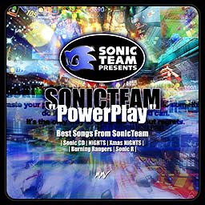

| ソニックチームのベストアルバム発売！ | |
|  |
SONIC TEAM "Power Play" 〜 BEST SONGS FROM SONIC TEAM 〜 |
|
発売日：１９９８年 １１月 ６日 価格：２３１０円 品番：ＭＪＣＡ−０００３３ 発売元：（株）マーベラス・エンターテイメント 販売元：（株）ポニーキャニオン
| |
|
ソニックチーム作品のボーカル曲を集めた、ファン待望のベストアルバムが１１月６日に、遂に発売決定！ 光吉氏、佐々木氏のボーカル曲を始め、数々の英語ボーカル曲も収録。 スピード感に溢れた、ダンサブルなサウンドを一枚に納めた必聴の一枚だよ。
ソニックアドベンチャーで未来を見る前に、まずはこれを聞いて原点に戻ろう！ | |
| - 収録曲 - |
| [NiGHTS] |
|
01. DREAMS DREAMS ( Kids ver. ) ご存じ、ナイツのエンディングテーマ！ 好評だったのにサントラには収録されていなかったこのバージョン。 ついにＣＤになりました。 |
| [Christmas NiGHTS] |
|
02. DREAMS DREAMS（A-Cappella ver．） クリスマスナイツからのアカペラバージョンの「Dreams Dreams 」 ちょっと大人のクリスマスって感じですよね。 恋人と二人で聞きたいムード満点のバージョンです。 |
| [SONIC R] |
|
03. Super Sonic Racing SEGA EUROPEのサウンドクリエイタ−、Richardが全曲書いて いるSonic Rのトップをかざるのはこの曲！ Everybody's Super Sonic Racing !!
04. Can You Feel The Sunshine
05. Number One |
| [BURNING RANGERS] |
|
06. Burning Hearts 〜炎のANGEL〜 セガの光吉が熱く熱く歌う同タイトル主題歌です。 セガカラにも収録されてるよ！ みんな覚えてうたってね。
07. We are Burning Rangers
08. I just smile |
| [SONIC CD] |
|
09. Sonic‐You Can Do Anything 93年に発売されたMEGACD版「SONIC CD」の、オープニングムービー用 テーマ曲。宇徳敬子さんが歌ってくれました。駆け回るソニックのムービー に負けないスピード感のあるポップなナンバーです。
10. Cosmic Eternity‐Believe in Yourself |
| [Bonus Track] |
|
11. DREAMS DREAMS 〜 Sweet mix in holy night このソニックチームホームページのナイツサウンドのコーナーでプレゼント 企画として作られたレゲーバージョンの「Dreams Dreams 」です。 「ナイツ」や「クリスマスナイツ」で使われた音素材を随所にちりばめ スイートに作り込みました。今年のクリスマスにでも聞いて盛り上がろう。 |
|
それからこれはないしょなんだけど・・・一足先に未来を聞けるかも・・・ さあ、今すぐ予約に走ろう！
|